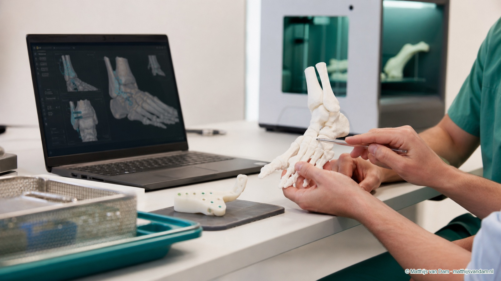

Artikel voor zorgprofessionals
Patiënt-specifieke instrumentatie bij complexe voet- en enkelchirurgie
Complexe revisie-artrodese vraagt nauwkeurige preoperatieve planning. De poster van de ETZ Wetenschapsdag 2026 laat zien hoe CT-gebaseerde planning, 3D-laboratoriumsamenwerking en custom drill guides kunnen worden ingezet bij gecompromitteerd bot.
Team
Betrokken bij 3D-printing en planning
Context: revisie na gefaalde subtalaire fusie
De casus op de poster beschrijft een 52-jarige vrouwelijke patiënt met symptomatische pseudoartrose na twee gefaalde subtalaire fusiepogingen. Dit is precies het type situatie waarin standaard intraoperatieve oriëntatie kan worden bemoeilijkt door veranderd anatomisch landschap, bestaand osteosynthesemateriaal, verminderde botkwaliteit en beperkte veilige schroefcorridors.
Virtuele preoperatieve planning
De technische workflow startte met CT-gebaseerde virtuele planning. Het doel was het definieren van optimale schroeftrajecten, met expliciete aandacht voor het vermijden van laagdens bot en bestaande implantaten. Dat maakt de planning niet alleen geometrisch, maar ook klinisch-contextueel: het traject moet uitvoerbaar, biomechanisch zinvol en veilig zijn.
Custom drill guides
Op basis van de planning werden biocompatibele, steriliseerbare patiënt-specifieke boormallen ontworpen via 3-matic software. De poster beschrijft positionering op de talar neck, waarna twee 2,4 mm Kirschner-draden via de guide werden geplaatst en gevolgd werden door 6,5 mm gecanuleerde schroeven.
Dit type patiënt-specifieke instrumentatie is vooral interessant wanneer conventionele vrijehandtechniek minder voorspelbaar wordt. De meerwaarde zit niet in automatisering van de operatie, maar in het vertalen van preoperatieve besluitvorming naar een reproduceerbare intraoperatieve referentie.
Technische nauwkeurigheid en uitkomst
De poster rapporteert dat de schroefpositionering binnen klinisch acceptabele grenzen bleef, zonder intraoperatieve of postoperatieve complicaties in deze casus. De gemeten angulaire deviatie bedroeg 5,76 graden voor schroef 1 en 7,38 graden voor schroef 2. De entry point deviation bedroeg respectievelijk 3,12 mm en 3,32 mm.
Follow-up CT na twaalf weken liet progressieve fusie zien, in combinatie met duidelijke klinische verbetering van de symptomen. Als casus illustreert dit hoe PSI een brug kan vormen tussen preoperatieve 3D-planning en intraoperatieve uitvoering bij complexe revisiechirurgie.
Implementatievragen
De klinische relevantie ligt niet alleen in de technische haalbaarheid, maar ook in selectie en implementatie. Welke casussen rechtvaardigen extra voorbereidingstijd en 3D-labcapaciteit? Hoe wordt de planning gevalideerd? Hoe wordt steriliteit, pasvorm en intraoperatieve fallback geborgd? En welke uitkomstmaten zijn nodig om van veelbelovende casuistiek naar structurele toepassing te groeien?
Voor voet- en enkelchirurgie kan patiënt-specifieke instrumentatie vooral waardevol zijn bij revisies, deformiteit, beperkte botvoorraad en situaties waarin millimeters verschil relevant zijn voor fixatie, veiligheid en herstelkans.
Bron: poster ETZ Wetenschapsdag 2026, Pioneering Patiënt-Specific Instrumentation in Complex Foot and Ankle Surgery, Vito van Dal, Pieter-Jan Scheerlinck en drs. Matthijs van Dam.